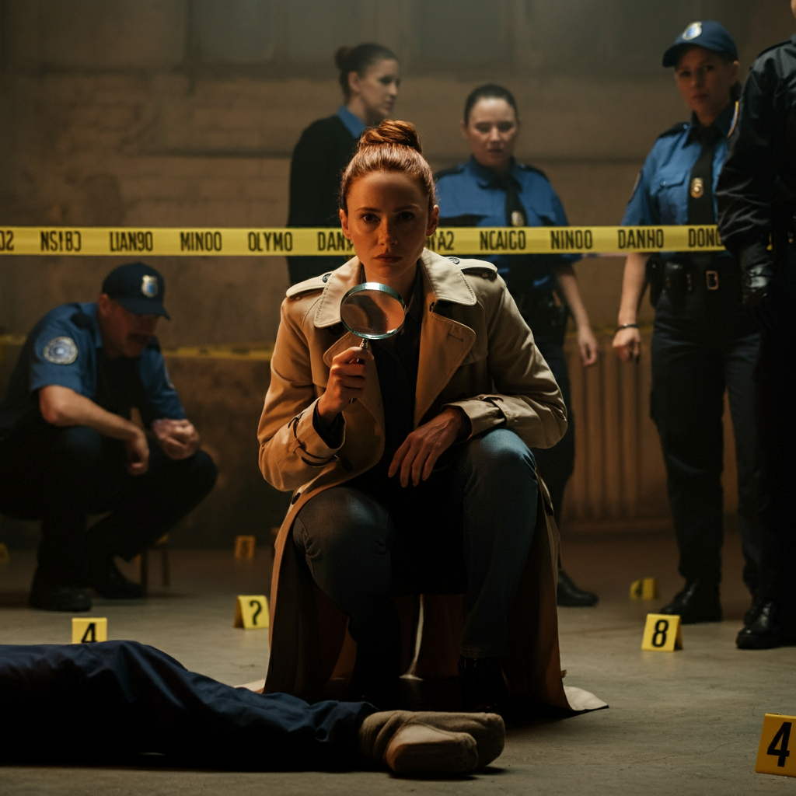

The Twist:
Image created with ImageFX
The investigation reaches a dead end until Detective Alvarez reexamines the crime scene, particularly the position of Adeline’s body. There’s something off about the way the victim is positioned, suggesting that it was not a random act of violence. The glass of wine—untouched—holds a hidden clue: a single drop of blood.
It becomes clear that the murder was not about money or jealousy—it was about power. The "perfect" murder was meticulously planned and executed, but the mistake was in the timing.
Adeline had uncovered something more than forgery: a web of betrayal involving all three suspects, each with a part to play. Harry knew about the forgery ring, but he wasn't the one who pulled the trigger. Cece had a motive, but she wasn’t the mastermind.